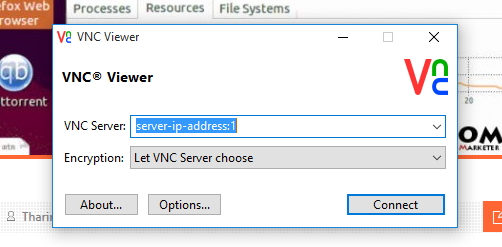

Ubuntu 16.04 LTS is out for a quite while now. And it comes with great improvements. Installing and configuring VNC server on a Ubuntu 16.04 LTS server to enable remote desktop is easier than ever. So if you want to access an Ubuntu 16.04 server remotely from your Windows PC or MAC, you can follow this tutorial to configure it.
A remote server with desktop connection can be used to hide your online identity, to access websites that are blocked on your geographical area, to download torrents safely without getting caught or to encode and upload videos. And I’m sure there are many more reasons why you would want to configure VNC on your remote Ubuntu 16.04 server. When configured, you can access your VPS through VNC viewer as if you’re sitting in front of a Ubuntu 16.04 desktop.
 Not a tech guy? Rather have a freelancer install Remote Desktop (VNC) for you? You can hire me to do it for you for a small fee!
Not a tech guy? Rather have a freelancer install Remote Desktop (VNC) for you? You can hire me to do it for you for a small fee!Hire me and have your Remote Desktop (VNC) ready within 24 hours!
Get VNC Server Installed
The reason I prefer Ubuntu VNC over Windows RDP is that Ubuntu servers are so much cheaper than Windows VPS. You can buy 1GB RAM Ubuntu VPS for $10 per month from my recommended unmanaged VPS providers and configure it to enable VNC following this tutorial. So I’m going to assume that you have a Ubuntu 16.04 VPS ready to be configured. Let’s start the installation. You need to be connected to your VPS as root using Putty to proceed.
Installing VNC Server
Following command will install latest Xfce desktop environment and the TightVNC package on your Ubuntu 16.04 VPS. These packages are available in the official Ubuntu repository.
apt install xfce4 xfce4-goodies tightvncserver
It’ll take a minute or two to complete. When it’s done, you can run following command to initiate initial configuration of VNC server.
vncserver
You’ll be promoted to enter and verify a password. This is the password for root VNC user. It can be different from your server root password. You’ll be also asked for view-only password, you can ignore it by typing n.
It’s also important that you install a package manager. You can install official Ubuntu software center. But I prefer to use Synaptic Package Manager. Following command will install it.
apt install synaptic
Update and upgrade.
apt update apt upgrade
Configuring the VNC Server
Since you ran the vncserver command on previous step, you need to stop it before making any modifications to the configuration. Following command will do it.
vncserver -kill :1
Now backup the current configuration file.
mv ~/.vnc/xstartup ~/.vnc/xstartup.bak
Create a new xstartup file with nano text editor.
nano ~/.vnc/xstartup
Paste following lot,
#!/bin/bash xrdb $HOME/.Xresources startxfce4 &
Save and close file. Give proper permissions to execute the file we just created.
chmod +x ~/.vnc/xstartup
Start VNC server,
vncserver
Connecting to Remote server
Your VPS is now fully configured with VNC to be used as a remote desktop. But you’ll need a VNC viewer installed on your local PC or MAC to be able to access it. I use RealVNC. It’s free for personal use. So install RealVNC on your local PC and you’ll see following window when you start it up.

Type your server’s IP address followed by :1 and then click Connect. You’ll be asked for the password you created earlier. Entering correct password will open your Ubuntu 16.04 server’s desktop in a new window.
You can start installing apps you need and configure your VNC server as you need. You’ll have to run vncserver command each time you reboot your VPS as VNC server will not start with the reboot.
Great article Man. I was trying to install it via Digital Ocean tutorials but it was giving me some sort of errors. Your guide is perfect for newbie like me. Thanks a ton.
Just add
sudo apt-get update
in the beginning. Even such small things become tedious for newbie like me.
I can not save and close file.How can I do?I am use ubuntu 16 Digital Ocean.Please
Thank you
Takhom
hey its nano text editor. so press CTRL+X then Press Y and Enter. it will be saved and closed.
By the way great article. Thank you so much author
Font directory ‘/usr/share/fonts/X11/Type1/’ not found – ignoring
Font directory ‘/usr/share/fonts/X11/75dpi/’ not found – ignoring
Font directory ‘/usr/share/fonts/X11/100dpi/’ not found – ignoring
I also found the same error detail.
How can you solve it?
Try this,
i did same as you told in above article but it is showing grey screen when i connect to it to virtual box ubuntu machine
ow connect with manjaro? I try Remmina Client but not works. Not works with RealVNC Client on manjaro too
tnx man a lot I wish you all the best
Good luck to you too 🙂
xauth: (argv):1: bad display name “tensor07BlockChain:4” in “add” command
New ‘X’ desktop is tensor07BlockChain:4
Starting applications specified in /home/tensor07/.vnc/xstartup
Log file is /home/tensor07/.vnc/tensor07BlockChain:4.log
I am getting bad display name..so how to resolve it?